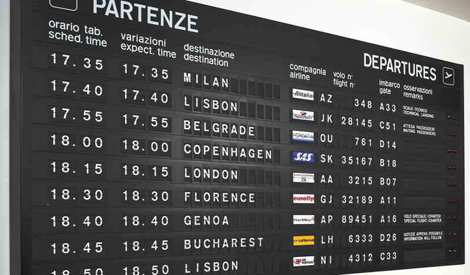
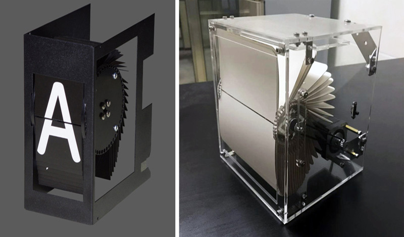
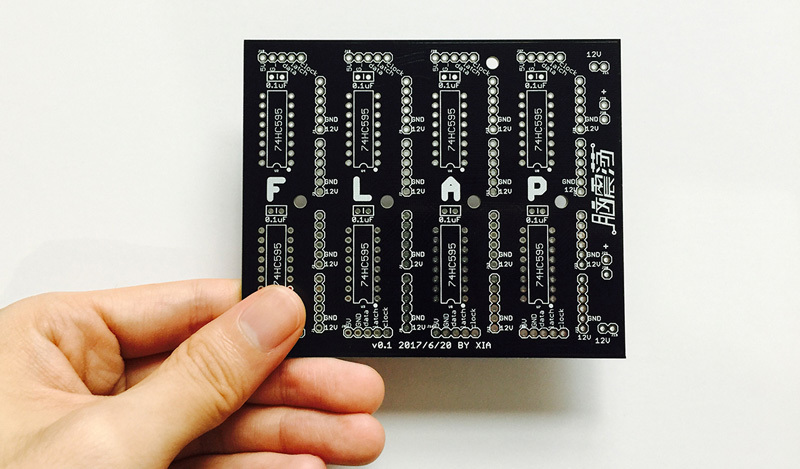
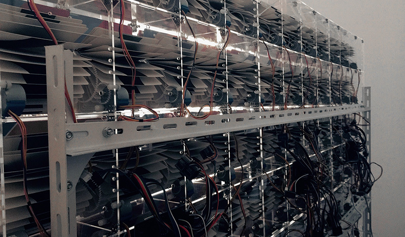
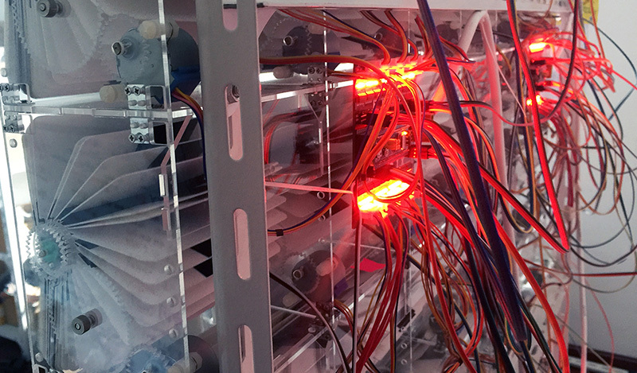
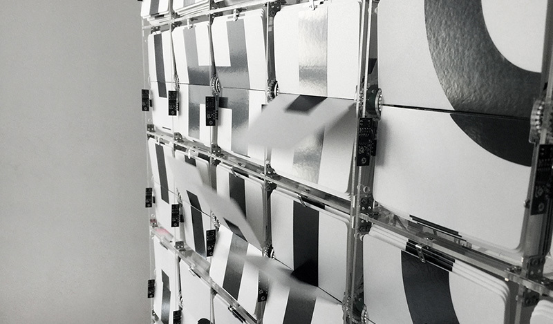
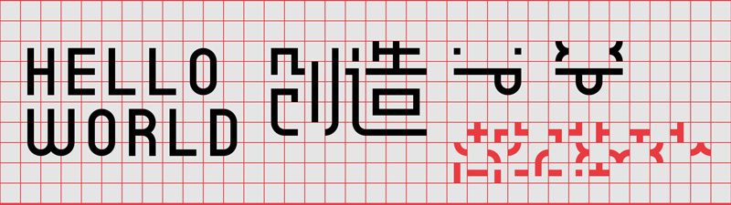
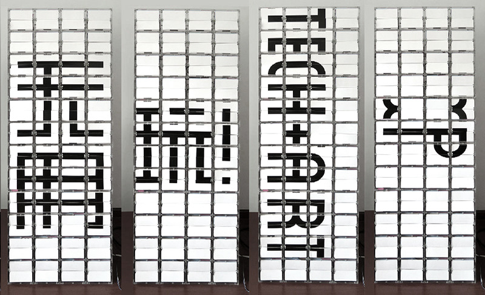
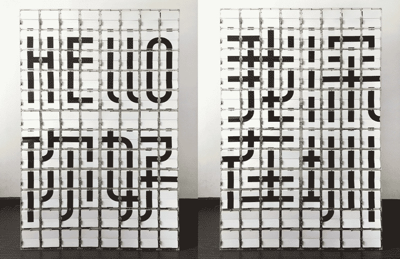

Split-Flap Display, 2017
Split-Flap Display is a mechanical display technology invented in the 1950s and gained popularity in the 70s and 80s, before being replaced by the more flexible and cost-efficient LED screens. It works by rotating a deck of cards printed with letters and text symbols, and displays a specific letter/symbol when the rotation stops. It was widely used for information display in airports, train stations and stock trading venues.

In the hope to bring back the physicality and sensory characteristics of the Split-Flap Display that a LED screen cannot provide, we set out to revive the old Split-Flap Display technology with a modern twist. The new display uses a graphical puzzle-piecing system and can display not only English letters but Chinese characters and graphics as well.
The display below transitions from 'Hello 你好' to '我在深圳' (I'm in Shenzhen).






Puzzle-piecing graphic display system. The 24 red shapes on the bottom right are all the unit shapes needed for this display system.


